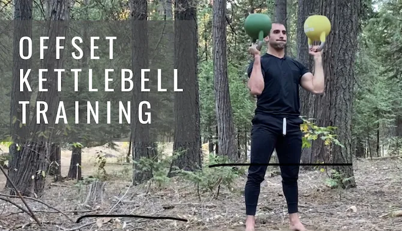

B277 · Develop high-level core control with these two double kettlebell lifts
Hi {first_name},
Today I’m happy to bring you a fun and challenging way to build core control and strength utilizing kettlebells.
While you likely already know I’m a huge fan of single kettlebell training (mainly due to single kettlebell lifting being so accessible, cost-effective, and portable), there are certainly tremendous benefits and a place for double kettlebell lifting.
 In this new video, I share ways to perform offset kettlebell training using two main lifts - one focused on the lower body and one on the upper body. You’ll get a chance to experience the increased demand placed on the entire body that these lifts entail and build crazy levels of old-world strength as a result.
Click here to see this full offset training video and get beastly now! ; )
P.S. I’m thrilled to share that Kettlebell Lifestyle is now available for purchase! End training that burns you out, is one dimensional, and for lack of a better term - boring. Kettlebell Lifestyle teaches you how to get more out of one kettlebell than most people will get from a full gym, plus contains TONS of lifestyle support aspects such as stretching exercises, breath work, mobility training to help bring more balance to your life.
Click here to get started and please share this with any friends or family who may be looking to get more from their at-home workouts right now. |